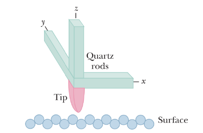
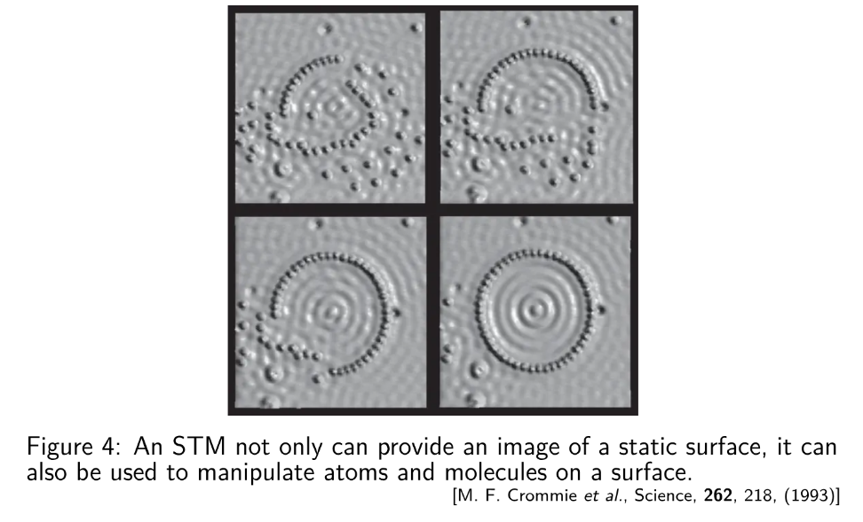

薛定谔方程和量子隧穿¶
方程推导¶
我们尝试对质量为\(m\) 的自由粒子（用一个波表示）
$$
\psi(x, t) = e^{i(kx - \omega t)}
$$
写出描述其量子行为的方程。
对于一个自由的一维经典粒子，其能量为
$$
E = \frac{p^2}{2m}
$$
根据德布罗意的假设，我们得到
类似地，我们得到 $$ E = h\nu = \hbar \omega = i\hbar \frac{1}{\psi(x,t)} \frac{\partial \psi(x,t)}{\partial t} $$
因此，利用波函数，能量-动量关系可写为
当存在势场时，例如谐振子势 \(U(x) = ax^2/2\)，经典关系修正为
则上述方程也可改写，就得到了薛定谔方程。
薛定谔方程¶
薛定谔提出，在空间中运动的单个粒子的波函数 \(\psi(x, t)\)满足以下方程：
其中 \(U(x, t)\)是粒子的势能，\(m\)是粒子的质量。我们可以很容易地将其推广到更高维度。
注意，薛定谔方程是量子力学的一个假设，并非由经典物理推导而来。
在我们讨论的大多数情况下，势能 \(U = U(x)\) 与时间无关。我们可以通过以下试探解来求薛定谔方程的定态解： $$ \psi(x, t) = \phi(x) e^{-iEt/\hbar} $$
将上述关于 \(\psi(x, t)\) 的试探解代入，我们得到关于 \(\phi(x)\) 的方程：
这个方程被称为定态薛定谔方程。通过求解此方程，我们可以在与时间无关的外部势场 \(U(x)\)下得到定态解\(\phi(x)\)。
波函数 \(\phi(x)\) 满足
$$
\frac{\partial^2 \phi(x)}{\partial x^2} + \frac{2m}{\hbar^2} [E - U(x)] \phi(x) = 0
$$
在自由空间中，\(U(x) = 0\)。其通解为
$$
\phi(x) = A e^{ikx} + B e^{-ikx}
$$
其中\(A\)和 \(B\)为常数，且 \(k = \sqrt{2mE}/\hbar\)。
完整的含时波函数为
$$
\psi(x, t) = Ae^{i(kx - \omega t)} + Be^{-i(kx + \omega t)}
$$
其中 \(\omega = E/\hbar\)。这两项分别对应于右行波和左行波。
考虑右行波 \(\psi(x, t) = Ae^{i(kx - \omega t)}\)，其概率密度是均匀的：
$$
|\psi(x, t)|^2 = \psi^*(x, t)\psi(x, t) = |A|^2
$$
这意味着如果我们进行测量以定位粒子，其位置可能出现在任意 \(x\) 值处。
薛定谔方程引出的问题¶
自由量子力学粒子的通解为
$$
\psi(x) = Ae^{ikx} + Be^{-ikx}, \quad k = \sqrt{2mE}/\hbar
$$
或者，加上标准的时间依赖关系 \(e^{-iEt/\hbar}\)，
该公式表示一个右行波和一个左行波，其（波前，即相）速度为 $$ v_{\text{ph}} = \frac{\hbar k}{2m} = \sqrt{\frac{E}{2m}} $$ 另一方面，自由粒子的经典速度由下式给出： $$ v_{cl}=\sqrt{\frac{2E}{m}}=2v_{ph} $$
则引出问题：量子力学波函数传递速度仅为它所代表粒子速度的一半
若要对自由粒子的波函数进行归一化，例如，由 \(Ae^{ikx}\)所表示的波函数：
引出问题 ：该波函数无法归一化！
事实上，这个定态（可分离变量）解 \(\psi(x) = Ae^{ikx}\)并不对应于经典理论中的自由粒子状态。该解描述的是表现为波动性的量子自由粒子，其行为与经典粒子完全不同。
那么，对应于经典自由粒子的、薛定谔方程的现实解是什么？
波包¶
在量子力学中，一个局域化的粒子通过这些定态的自由粒子（或平面波）状态的线性叠加来建模。

一般来说，我们可以构造一个线性组合（对连续的 \(k\) 进行积分）
对于适当的 \(\phi(k)\)（通常为高斯型），该波函数可以归一化。我们称之为波包，它包含一定范围的 \(k\)值，因此也对应一定范围的能量和速度。 如果以适当的方式叠加更多不同波长或动量的平面波状态（即增加 \(\Delta p\)），可以使粒子的位置更加局域化（减小 \(\Delta x\)）。
根据海森堡原理，这些不确定性满足 \(\Delta x\Delta p\geq \hbar/2\)。
结果表明，波包的群速度，而非定态的相速度，与经典粒子的速度相匹配。 $$ v_{group}=\frac{dw}{dk}=\frac{d}{dk}(\frac{\hbar k^2}{2m})=\frac{\hbar k}{m}=2v_{ph}=v_{cl} $$

以下是波包的图像表示：

负电势阶跃¶
考虑一束非相对论电子，每个电子具有总能量 \(E\) ，沿 \(x\) 轴通过一个窄管。它们在 \(x = 0\) 处遇到一个高度为 \(V_b < 0\) 的负电势阶跃（注意电子的电荷 \(q\) 满足 \(q < 0\)，因此 \(qV_b > 0\)）。

我们考虑 \(E > qV_b\) 的情形。在经典理论中，电子应全部穿过边界。量子力学会发生什么？
我们分别对两个区域应用薛定谔方程。波函数在 \(x = 0\) 处必须彼此一致，包括函数值及其斜率（边界条件）。

区域 1（ \(x < 0\) ）：
$$
k = \sqrt{2mE}/\hbar
$$
$$
\psi_1 = Ae^{ikx} + Be^{-ikx}
$$
区域 2（\(x > 0\)）：
$$
k_b = \sqrt{2m(E - qV_b)}/\hbar
$$
$$
\psi_2 = Ce^{ik_bx} + De^{-ik_bx}
$$
首先我们可以设 \(D = 0\)，因为在右侧不存在电子源，并且在区域 2 中不会有电子向左运动。 现在考虑 \(x = 0\) 处的边界条件：
我们应当能解出 \(B/A\) 和\(C/A\)，但无法确定 \(A, B, C\) 的具体值。注意，具体值对我们当前的目的并不重要。
事实上，为了求出电子从阶跃处反射的概率，我们需要将反射波（ \(Be^{-ikx}\) ）的概率密度与入射波（\(Ae^{ikx}\)）的概率密度联系起来。因此，我们定义一个反射系数 \(R\) ：
从量子力学角度看，电子会从边界反射，但仅以一定的概率发生。
类似地，透射系数（透射概率）为
我们也可以考虑另一个量
为什么这两个量会相差一个比值\(\frac{k}{k_b}\)呢？
回想电流密度 \(J = nqv\)。我们可以得到 $$ T = \frac{|C|^2 k_b}{|A|^2 k} = \frac{|C|^2 q(\hbar k_b/m)}{|A|^2 q(\hbar k/m)} = \frac{J_{\text{透射}}}{J_{\text{入射}}}。 $$ 同样可以写出 $$ R = \frac{J_{\text{反射}}}{J_{\text{入射}}} $$
因此，\(T = 1 - R\)正是电流守恒的体现
$$
J_{\text{透射}} = J_{\text{入射}} - J_{\text{反射}}
$$
由于在反射过程中，电子的介质不变，电子的速度也保持不变，所以反射系数\(R\)恰好可以表示为两个波辐的平方的比值。
以下是负电势阶跃的图像表示：

量子隧穿¶
现在考虑一个势垒，这是一个厚度为 \(L\) 的区域，其中电势为 \(V_b (< 0)\)，势垒高度为 \(U_b (= qV_b)\)。
我们考虑 \(E < qV_b\) 的情况。在经典理论中，电子被禁止进入势垒区域，因此会全部被反射。然而，物质波具有一定的概率渗透（或更准确地说，隧穿）通过势垒，并在另一侧出现。我们称这种效应为量子隧穿。

我们关注电子出现在势垒另一侧的概率。因此，我们需要计算透射系数 \(T\)。一般步骤如下。
- 将空间分为三个区域，并在每个区域中求解薛定谔方程（3*2-1=5个未知数）
- 在两个边界处应用边界条件(2*2 = 4个方程)
- 计算隧穿系数。

具体求解过程不再赘述。我们考虑一般性的解。

势垒左侧（对应于 \(x < 0\)）的振荡曲线是入射物质波与反射物质波（其振幅小于入射波）的叠加。产生振荡是因为这两列相向传播的波相互干涉，形成了驻波图样。
在势垒内部（对应于 \(0 < x < L\)），概率密度随 \(x\) 指数衰减。然而，如果 \(L\) 很小，在 \(x = L\)处概率密度并不会完全降为零。
在势垒右侧（对应于 \(x > L\)），概率密度图描述了一个通过势垒的透射波，其振幅虽低但保持恒定。
我们可以为入射物质波和势垒定义一个透射系数 \(T\)。透射系数 \(T\) 近似为
$$
T \approx e^{-2kL}
$$
其中
$$
k = \frac{\sqrt{2m(qV_b - E)}}{\hbar}
$$
\(T\) 的值对 \(L\)、\(m\) 以及 \(U_b - E\) 的变化非常敏感。
对于任意的 \(U_b (= qV_b)\) 和 \(L\)，都可以得到精确的结果。
通常，当 \(E < U_b\) 时，我们称之为隧穿。在此范围内，如图所示，\(T(E)\) 随能量近似呈指数增长。

当 \(E \gg U_b\) 时，如经典预期一样，\(T(E) = 1\) 。
以下是量子隧穿的图像表示：

量子隧穿的现实应用——扫描隧道显微镜（STM）¶
光学显微镜所能观察到的细节尺寸受限于其使用的光波长（紫外光约为300 nm）。我们可以利用电子物质波（通过隧穿势垒）来获得原子尺度的图像。
一个安装在石英棒上的细金属探针被放置在待测表面附近。表面与探针之间的空间构成一个势垒。

石英具有压电效应。通过在石英上施加电场可以控制探针的位置。探针的水平位置由 \(x\) 和 \(y\) 方向的电场控制；表面与探针之间的垂直距离由 \(z\) 方向的电场控制。
透射系数 \(T \approx e^{-2kL}\) 对势垒宽度非常敏感。
隧穿电流对表面与探针之间的距离非常敏感。
在探针扫描表面时，通过调整探针的垂直位置以保持隧穿电流恒定。从而实现原子尺度的成像。
